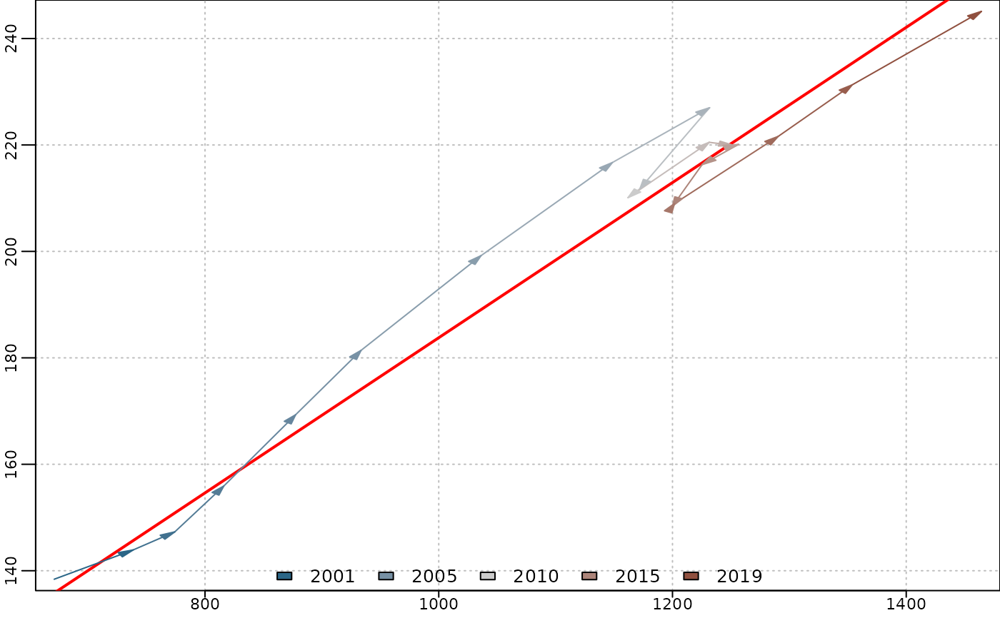

The function in_scatter returns low-frequency comparisons of the inputs from
a praislm, a twoStepsBenchmark or threeRuleSmooth.
Usage
in_scatter(
object,
type = if (model.list(object)$include.differenciation) "changes" else "levels"
)Value
a named matrix time series of two or three columns, one for the low-frequency serie
and the others for the high-frequency series (eventually differentiated if
include.differenciation is TRUE).
A tscomparison class is added to the object.
For a twoStepsBenchmark object, this matrix has three columns,
for the low-frequency series, the high-frequency on the regression span and
the high-frequency series on the benchmark span.
If outlier effects are estimated, the contributions of the outliers are substracted from the low-frequency series.
Examples
benchmark <- twoStepsBenchmark(turnover,construction,include.rho = TRUE)
plot(in_scatter(benchmark))
